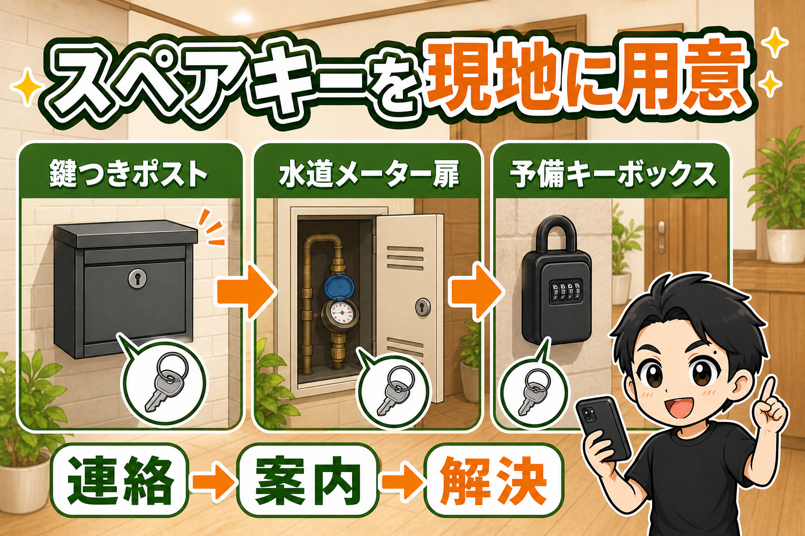
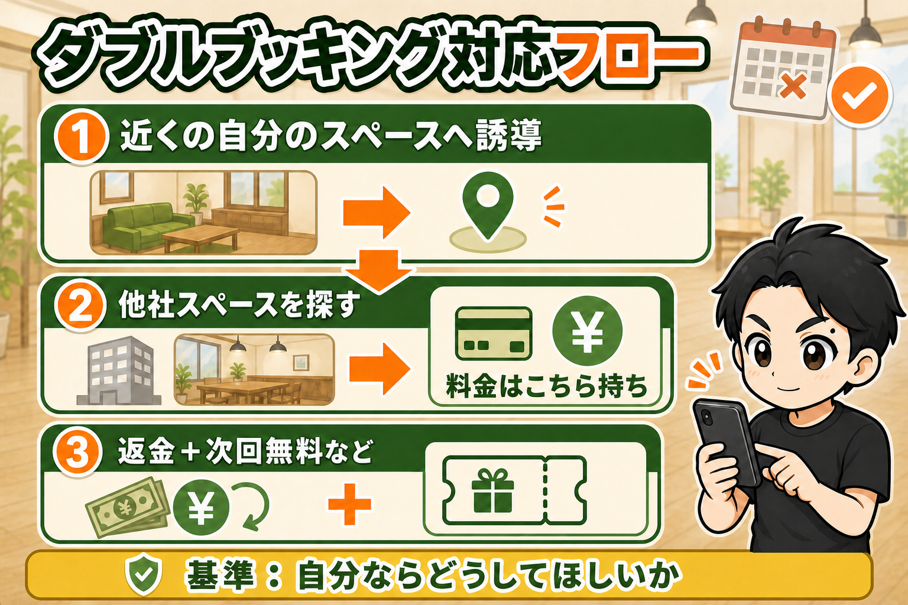
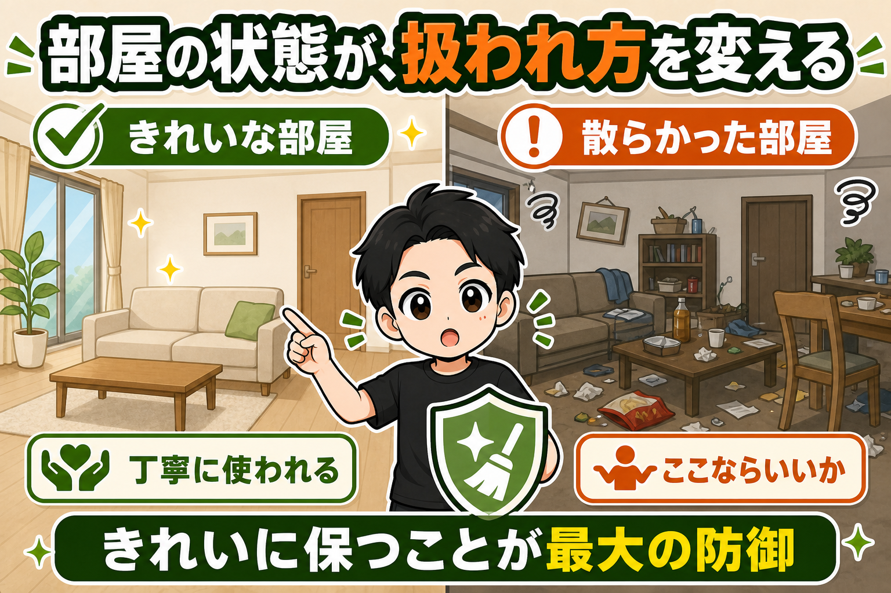

レンタルスペースを5年・23部屋やってきて、トラブルは避けて通れない道です。
大事なのは、起きてしまったら感情を入れずに、適切に対処すること。
よくあるトラブル5つと、私の対応をそのまま書きます。
① 鍵が開かない・鍵がない
「前のお客さんが鍵を持って帰ってしまった」
「キーボックスが開かない」
無人運営の定番トラブルです。
対策は、スペアキーを現地に隠しておくことに尽きます。

鍵つきのポストや、扉の脇によくある水道メーターの扉の中に、予備のキーボックスを置いておく。
「鍵がない」と連絡が来たら、そちらのスペアを案内すれば、その場で解決します。
ついでに、意外と多いのがトイレの鍵です。
お客さんは普段と違う鍵の形状に不慣れで、間違えて内側からかけた状態で出てしまうことがあります。
非常解錠機構のあるトイレ錠なら、万が一のときに外側から開けられます。
だから私は、トイレの鍵の写真を外側・内側・側面から事前に撮っておいて、「ここを押してドアノブを回すと開きますよ」と、すぐ画像つきで答えられるようにしています。
② 行ったら前のお客さんがいる
まず、居座っているお客さんに電話・メッセージを送ります。
出なければ、防犯カメラの出番です。
双方向通話に対応したカメラなら、カメラから「お時間です」と声かけして、出て行ってもらいます。
超過した分は、利用規約に沿って前のお客さんに請求。
次のお客さんには時間が減った分を割り引いたり、後ろが空いていれば延長してあげたり、お客さんの希望に合わせて対応します。
③ ダブルブッキング
これは結構きついです。
特に相手がダンス教室の先生など、生徒さんからお金をもらって開催している場合は、ややこしさが跳ね上がります。
なぜ起きるか。
複数の予約サイトの予約をGoogleカレンダーに集めて管理しますが、その連携が失敗したとき。
連携のタイムラグの間に、別のサイトから予約が入ったとき。
予約システムとポータルサイトの相性で、お互いの予約を検知できないケースもあります。
または自主管理している定期利用のスケジュールを誤って入れてしまったとき。
起きたら、こう動きます。

- 近くに自分のスペースがあれば、まずそこへ誘導（必要に応じて割引）
- なければ、他社のレンタルスペースの空きを探して、移っていただく。自分の予約は返金して、他社スペースの料金はこちらが持ち、お客様には無償で使っていただく
- それもなければ、しっかり謝って、返金＋次回無料などの誠意ある対応
基準はひとつです。
自分が当事者だったら、どうしてほしいか。
④ 騒音クレーム
まず大前提。
騒音は、起きない物件を選ぶのが何より大事です。
ダンスなら、地下・1階・中2階など下にテナントがない物件。
建物の構造で選ぶ。
木造だったら、いくらお客さんに「静かにしてください」と言っても防ぎようがありません。
そのうえで起きてしまったら、お客さんに連絡して「もう少し音量を抑えてもらえませんか」と伝えます。
クレームが出るということは、音量が大きくなっている可能性があるからです。
予防としては、室内の掲示。
「騒音注意。クレームがあった場合は即退去など、利用規約で定めた対応と追加料金を適用します」と書いておく。
そして、クレームが出てしまった後の1週間くらいは、近隣の方も特に気にされています。
その期間は、予約のたびに個別メッセージで「お気をつけください」と一言入れます。
⑤ ゴミ・部屋を荒らされる
これは、粛々と対応するしかありません。
ただ、根本の対策として私が思っていることがあります。
ゴミがよく捨てられる場所って、最初からゴミが落ちていたり、汚かったりしませんか。
「ここならいいか」と思われているんです。
高級ブランド店に行って、バッグを乱雑に扱って、ぐちゃっと戻す人はいませんよね。
きれいに整った店では、人はきれいに扱います。
ぐちゃぐちゃな陳列の店なら、ひょいっと置きます。
レンタルスペースも同じです。
ゴミを捨てられるスペースは、「大丈夫だろう」と思われてしまったスペース。

きれいにしておくことは、お客様の満足のためでもあり、部屋を守る防御でもあります。
まとめ
- 鍵 → スペアを現地に隠す＋トイレの鍵は写真で即答
- 居座り → 電話→双方向カメラで声かけ。超過は請求、次のお客さんはケア
- ダブルブッキング → 自店→他社の順で移動先を用意。費用はこちら持ち
- 騒音 → 物件選びがほぼすべて。掲示＋クレーム後1週間は個別連絡
- ゴミ → 部屋をきれいに保つことが最大の防御
トラブル対応の答えは、全部同じです。
自分がお客さんだったら、どうしてほしいか。
そこから逆算すれば、だいたい間違えません。
▼もう1つの副業、AI社員だけのeBay輸出店の実録🐹
https://note.com/cham_ebay
▼ブログ（レンスペ×eBay、全記事まとめ）
https://rental-space.net